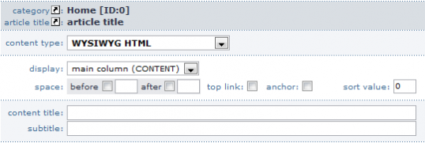
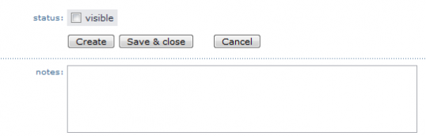
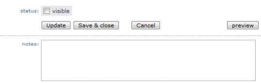

Introduction to content parts
from 1.2.9 and above
Head area
 Head area of content type / content part
» Field descriptions
category
Press Create / Edit Site Structure
Article title
Press Create Article
Important: When you use one of the links at category or article title before you have saved die used content part, the changes get lost.
Content type
Here you choose the content type / content part that you want to use.Important: NEVER change the content type / content part when you already have inserted content. It doesn't matter whether it was saved or not, because the content will be deleted. When you want to change the content type, copy the whole content, then xhange the content type and paste the content again.
Output
here you can say in which area the content part will be shown.
Space before / after
Here you can define a space between the actual and the following content block / content part.
Top-Link
Here you can show a link to the begin of the article./img/article/top_link_0.gif
Anchor
Here you can set an anchor, that means you can directly link to a content part. <a name="cpidxxx" class="anchorClass"></a> XXX is the ID of the content part. The article center in detail <a href="#cpidxxx">Linktext</a> XXX will be replaced with the ID of the content part.<a href="http://www.domain.tld/Alias.html#cpidxxx">Linktext</a> In this case "Alias " will be replaced with the structure name in that the article is located and xxx will be replaced again with the ID of the content part.Notice: Please note that #cpid is always written small.
Sort. Value
Content title
Content title of the actual CP
Sub title
Sub title of the actual CP
Notice:
Footer View to a newly created content type / content part In the footer you can find the following settings and change possibilities or buttons.
 Footer of the content type / content part
Footer » Feldbeschreibungen
Status
Here you can decide with a check whether the CP is visible for the visitor or not.
Create
The CP will be created, but you can continue to work with it.
Save
The CP will be created, but the View will be closed and you will jump to a summary of all CPs in this article.
Cancel
The CP will be closed without savings.Notice: All already inserted data will be deleted.
Notices
Hereyou can leave some notices for this CP.
Footer View to a already created content type / content part The view differs at a new created content type / content part as follows.
 Fusszeile des Inhaltstyps / Contentparts
» Field descriptions
Status
here you decide whether the CP is visble for the visitor or not
Actualize
The changes will be saved and you can continue to work in this view.
Save
The changes will be saved and the view will be closed. You are going back to the CP overview.
Cancel
The CP will be closed without savings.Notice: Alle inserted changes will be deleted.
Preview
Pressing this button shows the actual area as shown to the visitor.
Notices
Here you can leave some notices to this CP.
Article created: Monday, 16. July 2007